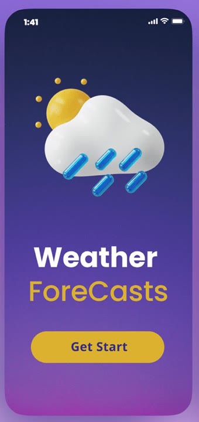
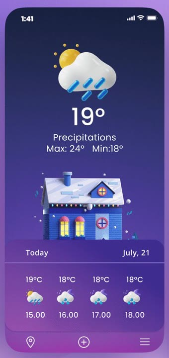
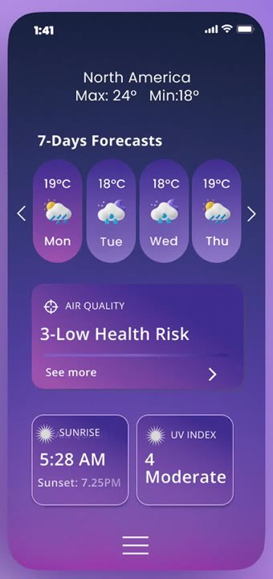

واجهة تطبيق طقس نظيفة بتوقعات كل ساعة ولسبعة أيام وجودة الهواء ومؤشر الأشعة فوق البنفسجية ووقت الشروق.
واجهة تطبيق طقس تركّز على المعلومة السريعة. معظم الناس يفتحون تطبيق الطقس لثوانٍ، لذلك تجيب كل شاشة عن سؤال واحد بسرعة: كيف الجو الآن؟ وبقية اليوم؟ وهذا الأسبوع؟
الاتجاه البصري يستخدم سماء ليلية بنفسجية وأيقونات طقس ثلاثية الأبعاد وبطاقات زجاجية، لتبدو المعلومات هادئة وسهلة القراءة.
19° مع الهطول والعظمى والصغرى — أول ما تراه.
درجات حرارة اليوم ساعة بساعة في صف واحد.
مرّر لترى الأسبوع القادم.
جودة الهواء والشروق والغروب ومؤشر الأشعة.



3 لوحة · البحث ورحلات المستخدم ونظام التصميم وكل الشاشات